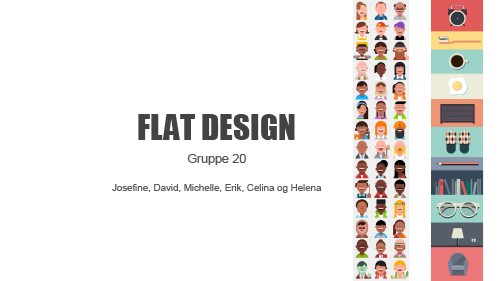

Responsive Site v3
Tema 1, Grundlæggende HTML

Stilart procesopgaver
01.01.01 - Moodboard
Inspriration fra nettet med typisk Flat Design karakteristika.

01.01.02 - Stilart Pitch
Gruppeopgave med samlet pitch om stilarten.
01.01.03 - Content til Stilartsite
Udarbejdelse af indesign-job med med responsivt design.

01.03.03 - Splashbillede
Idéarbejde til splashbillede i toppen af sitet.

01.03.04 Splashbillede v2
Førdiggørelse af splashbillede i responsive udgaver.